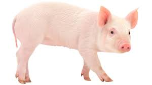

Article #1
Kaiken tämän takana on kuluttajien kasvava kiinnostus ruuan alkuperään. Toiveena on, että ruoka on tuotettu lähellä ja ekologisesti kestävästi, ei tehotuotannon ja massavalmistuksen ehdoilla.Mutta välillä homma epäonnistuu.”Sokos Hotelli Ilveksen tarjoama liha ei ollut peräisin sieltä mistä menu kertoi”, raportoi Urjalan Sanomien otsikko Sanomalehtien liiton viime viikolla järjestämän Suurten lehtipäivien illallisesta
Article #2
Kaiken tämän takana on kuluttajien kasvava kiinnostus ruuan alkuperään. Toiveena on, että ruoka on tuotettu lähellä ja ekologisesti kestävästi, ei tehotuotannon ja massavalmistuksen ehdoilla.Mutta välillä homma epäonnistuu.”Sokos Hotelli Ilveksen tarjoama liha ei ollut peräisin sieltä mistä menu kertoi”, raportoi Urjalan Sanomien otsikko Sanomalehtien liiton viime viikolla järjestämän Suurten lehtipäivien illallisesta
